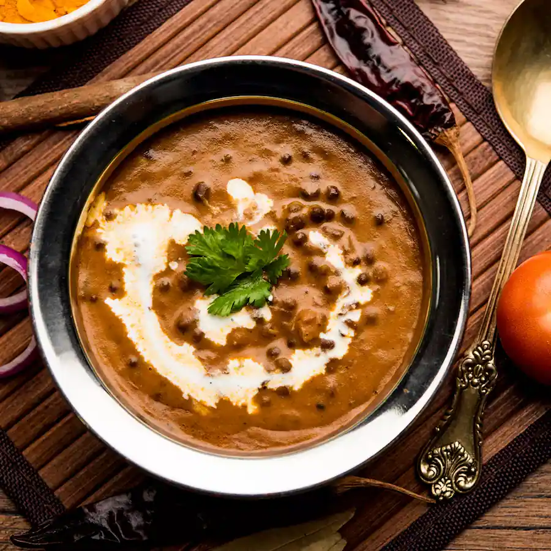

return to home
Dal Makhani recepie

- 1 cup whole black lentils (sabut urad dal), soaked overnight
- ¼ cup red kidney beans (rajma), soaked overnight
- 3–4 cups water (plus extra for soaking)
- 3–4 tbsp butter (plus extra for finishing)
- ¼ cup fresh cream (plus extra for garnish)
- 1 medium onion, finely chopped (optional in some restaurant styles)
- 1 tbsp ginger-garlic paste (or minced ginger and garlic)
- 1 ½ to 2 cups tomato puree (or 3–4 ripe tomatoes, blended)
- 1 tsp cumin seeds (jeera)
- ½ tsp turmeric powder (optional)
- 1 tsp red chili powder (Kashmiri red chili works well for color)
- 1 tsp garam masala
- 1 tbsp kasuri methi (dried fenugreek leaves), crushed
- Salt to taste
Steps to Make
- Soak and Pressure Cook
- Make the Masala Base
- Simmer and Finish